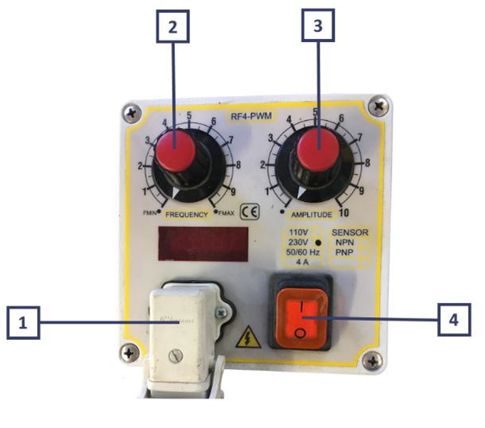
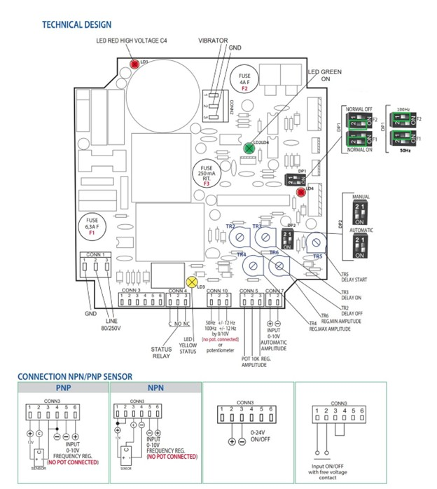
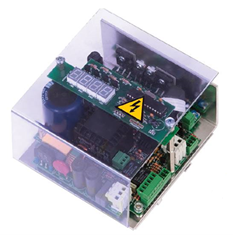
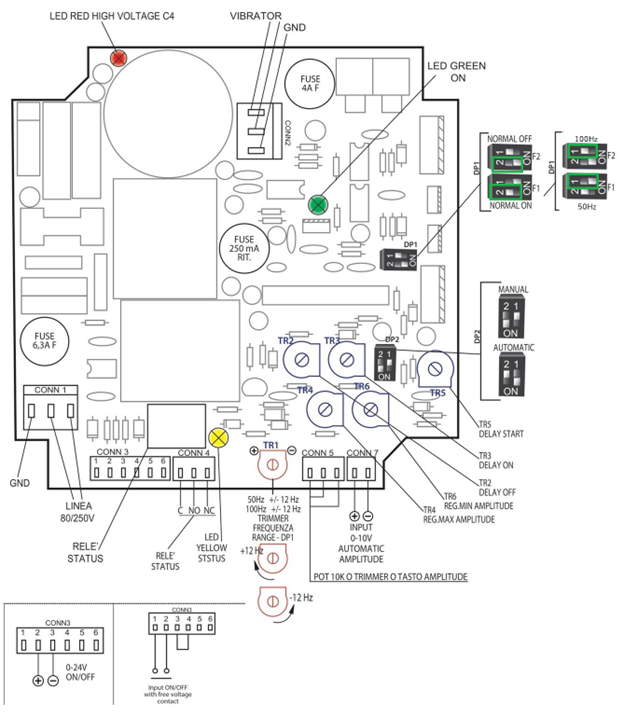

[ELE] Controller e Cablaggio#
La macchina, durante il funzionamento, non necessita della presenza continua di un operatore.
Attention
Utilizzare la macchina per scopo diverso da quello previsto dal Costruttore potrebbe causare gravi danni alle persone e/o cose e/o animali. La società ARS S.r.l. non risponde per danni causati da un uso improprio della macchina.
Descrizione Controller#
Il Controller digitale è dotato di un microprocessore con visualizzazione della frequenza. È possibile impostare un ritardo all’avvio o all’arresto del vibratore, tramite sensore PNP/NPN o tramite un contatto meccanico fino a un massimo di 6 secondi regolabili.
Dati Tecnici Controller#
Caratteristica tecnica |
Specifica / Valore |
|---|---|
Alimentazione elettrica |
85 / 250 V |
Frequenza / Fase |
50/60 Hz / monofase |
Consumo |
1,5 W max |
Corrente Max |
5 A (RMS) |
Fusibili |
Doppio 5A F 250V 5x20 H 1500A |
Carico Minimo |
50 mA (RMS) |
On/Off |
Contatto pulito - Segnale in tensione 0-24 Vcc |
Reg. Di Frequenza Vibratore |
50 ÷ 100 Hz +/- 12 Hz |
Ingresso Sensore |
NPN/PNP - contatto meccanico |
Ritardo ON/OFF |
0 / 6 secondi |
Temperatura di Funzionamento |
-15 °C / +45 °C |
Norme Europee |
EMC CE |
Grado di Protezione |
IP65 in cassetta |
Attention
È possibile integrare controller diversi da quello fornito dal Costruttore purché quest’ultimo ne abbia preliminarmente validato le caratteristiche tecniche. La società ARS s.r.l. non risponde per danni causati dall’utilizzo di un controller non validato o non compatibile con la macchina.
Procedure di utilizzo#
Verifiche preliminari#
Prima di procedere con la messa in funzione della macchina, occorre eseguire le seguenti verifiche:
Controller standard#
Connessioni elettriche e setup controller#
Attention
Prima di accendere il controller collegare la spina Schuko nella presa di corrente verificando che l’impianto abbia un adeguato sistema di messa a terra.
Per eseguire l’avviamento, procedere come descritto:

Per rispetto della normativa EMC il circuito è dotato di filtro con correnti di perdita verso terra inferiore a 1 mA.
Il circuito fornisce al vibratore un segnale PWM (modulazione in larghezza di impulso) regolabile in ampiezza e in frequenza, compensato rispetto alle variazioni della tensione di linea.
La sezione di controllo è isolata galvanicamente dalla sezione di potenza.
All’accensione il circuito attende qualche secondo prima di abilitare il vibratore.
Il circuito è controllato da microprocessore ed è dotato di limitazione della corrente in uscita tramite fusibile F4 (4 A).
Protezioni tramite fusibili
Fusibile |
Valore |
Posizione |
|---|---|---|
F1 |
6,3 A |
Ingresso di linea |
F3 |
250 mA |
Ingresso ON/OFF — limita la corrente disponibile per il sensore NPN/PNP e l’eventuale elettrovalvola |
F4 |
4 A |
Uscita vibratore |
Indicatori LED interni alla scheda
LED |
Colore |
Stato: acceso |
|---|---|---|
LD1 |
Rosso |
Alta tensione presente sui condensatori di filtraggio (fino a oltre 300 V con 230 V di linea) |
LD2 |
Verde |
Tensione presente nel circuito di controllo. Spento se F1, F2 o F3 sono interrotti |
LD3 |
Verde |
Relè ON/OFF commutato — vibratore in marcia o in arresto |
LD4 |
Giallo |
Relè commutato per superamento del tempo di mancanza pezzi |
Attention
Evitare assolutamente di toccare il circuito con il LED rosso (LD1) acceso.
I relè associati a LD3 e LD4 espongono un contatto in scambio sui connettori CONN4 e CONN5: CONN4 consente il pilotaggio in cascata di un modulo aggiuntivo, CONN5 l’attivazione di un allarme di flusso pezzi.
Regolazioni disponibili
I trimmer sulla scheda permettono di adattare il comportamento del vibratore all’applicazione:
TR2 — ritardo al fermo del vibratore (0 ÷ 10 sec)
TR3 — ritardo alla partenza del vibratore (0 ÷ 10 sec)
TR4 — ampiezza massima
TR5 — ritardo aggiuntivo in avvio
TR6 — ampiezza minima
Il vibratore può essere bloccato e riavviato tramite comando esterno su CONN3, compatibile con contatto pulito, sensore NPN/PNP o uscita 0–24 V, con o senza i ritardi configurati.
Tramite DP1 è possibile selezionare la logica diritta o negata del segnale ON/OFF.
Configurazione standard consigliata da ARS
Componente |
Impostazione |
|---|---|
DP1 |
Entrambi gli switch in posizione ON |
DP2 |
Switch 2 ON — Switch 1 OFF |
TR2 e TR3 |
Vite di regolazione in senso antiorario fino a fine corsa |
CONN3 |
Start a tramoggia con contatto pulito |

Controller analogico#

Connessioni elettriche e setup controller#
Per eseguire l’avviamento, procedere come descritto e fare riferimento all’immagine a fine paragrafo:
Per rispetto della normativa EMC il circuito è dotato di filtro con correnti di perdita verso terra inferiore a 1 mA.
Il circuito fornisce al vibratore un segnale PWM regolabile in ampiezza tramite segnale analogico e in frequenza tramite il trimmer TR1.
Il segnale è compensato rispetto alle variazioni della tensione di linea. La sezione di controllo è isolata galvanicamente dalla sezione di potenza.
All’accensione il circuito attende qualche secondo prima di abilitare il vibratore.
Il circuito è controllato da microprocessore ed è dotato di limitazione della corrente in uscita tramite fusibile F4 (4 A).
Protezioni tramite fusibili
Fusibile |
Valore |
Posizione |
|---|---|---|
F1–F2 |
6,3 A |
Ingresso di linea |
F3 |
250 mA |
Ingresso ON/OFF — limita la corrente disponibile per il sensore NPN/PNP e l’eventuale elettrovalvola |
F4 |
4 A |
Uscita vibratore |
Indicatori LED interni alla scheda
LED |
Colore |
Stato: acceso |
|---|---|---|
LD1 |
Rosso |
Alta tensione presente sui condensatori di filtraggio (fino a oltre 300 V con 230 V di linea) |
LD2 |
Verde |
Tensione presente nel circuito di controllo. Spento se F1, F2 o F3 sono interrotti |
LD3 |
Verde |
Relè ON/OFF commutato — vibratore in marcia o in arresto |
LD4 |
Giallo |
Relè commutato per superamento del tempo di mancanza pezzi |
Attention
Evitare assolutamente di toccare il circuito con il LED rosso (LD1) acceso.
I relè associati a LD3 e LD4 espongono un contatto in scambio sui connettori CONN4 e CONN5: CONN4 consente il pilotaggio in cascata di un modulo aggiuntivo, CONN5 l’attivazione di un allarme di flusso pezzi.
Regolazioni disponibili
I trimmer sulla scheda permettono di adattare il comportamento del vibratore all’applicazione:
TR2 — ritardo al fermo del vibratore (0 ÷ 10 sec)
TR3 — ritardo alla partenza del vibratore (0 ÷ 10 sec)
TR4 — ritardo oltre il quale scatta l’allarme mancanza pezzi (0 ÷ 10 sec)
TR5 — tempo aggiuntivo di attivazione dell’elettrovalvola di soffio aria dopo l’arresto del vibratore (0 ÷ 3 sec)
TR6 — rampa all’accensione del vibratore (0 ÷ 3 sec)
TR7 — ampiezza massima sul vibratore
Il vibratore può essere bloccato e riavviato tramite comando esterno su CONN3, compatibile con contatto pulito, sensore NPN/PNP o uscita 0–24 V, con o senza i ritardi configurati.
Tramite DP1 è possibile selezionare la logica NC o NO del segnale ON/OFF.
L’ampiezza di vibrazione si regola impostando la tensione analogica appropriata su CONN7.
Configurazione standard consigliata da ARS
Componente |
Impostazione |
|---|---|
DP1 |
Entrambi gli switch in posizione ON |
DP2 |
Switch 1 ON — Switch 2 OFF |
TR2 e TR3 |
Vite di regolazione in senso antiorario fino a fine corsa |
CONN3 |
Start a tramoggia con contatto pulito |

Messa in servizio della tramoggia#
Important
Se il sistema include FlexiVision One, la configurazione dei parametri della tramoggia è guidata nella sezione Configurazione Tramoggia.
Altrimenti, fare riferimento alla sezione Hopper di questo manuale.